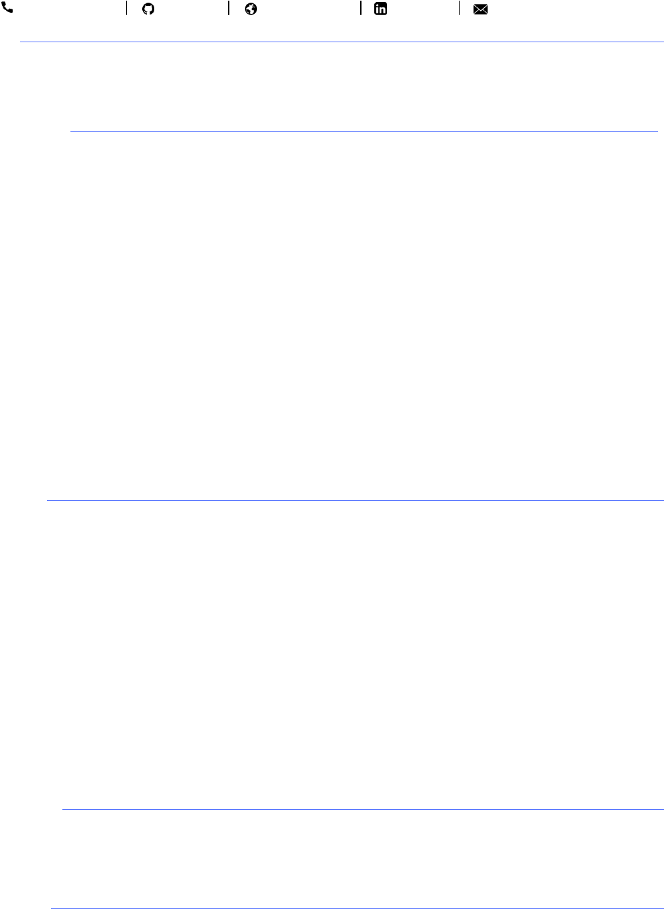

Jeffrey Huang
(647) 470-5988 jzxhuang jzxhuang.com jzxhuang jzxhuang@uwaterloo.ca
Skills
• Languages: JavaScript, Python, C/C++, Java, SQL, NoSQL, HTML, CSS, Assembly
• Technologies: Node, Express, Flask, Socket.io, DialogFlow, Alexa Skills Kit, Bootstrap, jQuery
• Tools: Git, JIRA, Confluence, Firebase, AWS, MS SQL Server, Matlab, Arduino, LaTeX
Experience
Product Manager Jan. 2018 - Apr. 2018
Genesys Markham, ON
• Defined product goals and deliverables by consolidating data, customer requests and company strategy
• Led transition of development team to an Agile (Scrum) workflow, shortening iteration cycle by 300%
• Facilitated cross-team discussion and collaboration throughout the entire product life cycle, ensuring all
teams are aligned with the overall product vision
• Reduced manual labour time by over 500% by automating conversion of JIRA epics to Confluence pages
• Designed and developed prototypes using natural language technology that enhance existing products and
open new channels of engagement, including Alexa Skills, Google Assistant Actions and chatbots
• Gave an office-wide tech talk on virtual assistants and conversational agents
Technical Engineer Sept. 2016 - Present
University of Waterloo Nano Robotics Group Waterloo, ON
• Designed and built competition-winning microbots smaller than the width of a strand of hair
• Led the design of a high-speed amplifier crucial to the development of the team’s first fully-fluid robot
• Worked with the controls team to ensure that the hardware and software work in unison
QA Analyst May 2017 - Aug. 2017
ICF Olson Toronto, ON
• Wrote and executed end-to-end test cases based on given business and technical requirements
• Logged and tracked issues on JIRA, assigning severity and priority as appropriate
Projects
VideoNail | Chrome extension to watch YouTube videos on any page. 250+ users, 5/5 rating
• Grew userbase over 10x in one month after joining the team project, after a year of stagnant growth
• Marketed the product and made many improvements based on user feedback
• Improved video player algorithms, increasing load speed and website compatibility by over 100%
StudyStart | Multi-platform chatbot that interactively quizzes students on their school notes
• Implemented algorithm to find facts in notes and convert them into questions using the Natural Language
Toolkit (NLTK) Python library. Leveraged processing power of AWS LightSail server to run the algorithm
• Developed the chatbot using DialogFlow and Firebase, deployed it on Google Assistant, SMS and Slack
WatchSafe | Web app that uses CV to detect & censor inappropriate content from videos in real time
• Wrote the Flask back-end, used Socket.io to update the front-end dynamically
• Won best use of .tech domain at Hack the Valley 2
Object Tracking Car | Robot car that identifies and follows an object on its own
• Built, wired and programmed the car with a Raspberry Pi and dual H-bridge motor setup
• Developed algorithm to track and follow an object using OpenCV for Python
Education
University of Waterloo, 2B Computer Engineering 2016 - 2021 (Expected)
Dean’s Honour List | 91% term average | International Baccalaureate Diploma Program Graduate
Relevant Courses: Data Structures & Algorithms, Embedded Microprocessor Systems, Engineering Design w/ Embedded
Systems, Operating Systems & Systems Programming, Signal & Systems, Digital Computer Organization
Interests
Snowboarding (CASI Certified Instructor), Conversational Agents, Video & Board Games, Racquet sports, Travelling